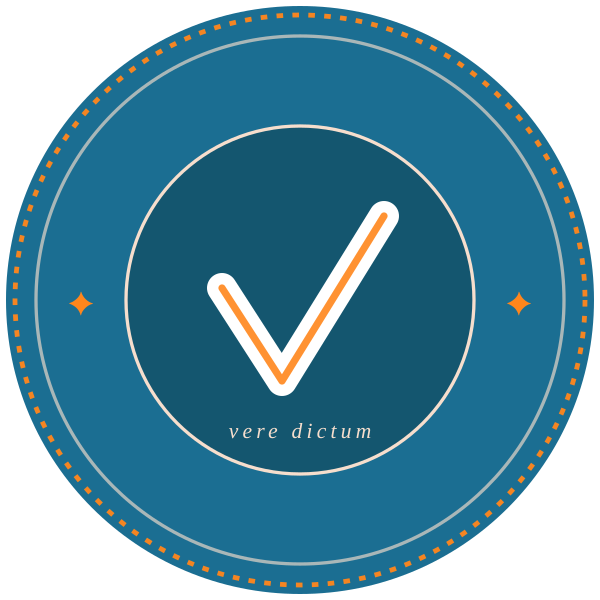

An independent verdict on what an openEHR server implements
Point Veredictum at a running clinical data repository and it tells you, with citations, which parts of the openEHR specification that server actually implements. It executes a machine-readable catalogue against the server's own wire, records every exchange, and computes verdicts as pure functions over what it recorded.
Veredictum is medieval Latin for “truly spoken”, vere dictum, and it is the word that became the English verdict. That is what the instrument produces: it runs the catalogue against a running CDR and speaks a verdict about what it observed. The seal above is the mark of that verdict.
Catalogue, run, verdict
Three stages, each one a separate command, each one auditable on its own. Nothing is computed at a stage that could hide what an earlier stage recorded.
The catalogue
1119 test cases, one small isolated case per behaviour, so a red row names one defect. Every expectation carries the specification section it comes from. 248 operation bindings say how each case reaches the wire; a case core carries no status code, header or media type of its own.
veredictum validate checks the catalogue itself. Zero
findings is the only passing result.
The run
You declare your deployment once, in an IXIT file: endpoints, the names of the environment variables holding credentials, and the postures your server serves. The instrument drives the catalogue against those endpoints and records every request and response.
veredictum run writes results.json, which
is a record of exchanges and not yet a judgement.
The verdict
A verdict is a pure function of your statement of claims, the recorded results, the catalogue and the capability matrix. Run it again on the same inputs and you get the same documents, on any machine.
veredictum verdicts writes the report, the statement
and the certificate.
Functional conformance, measured performance, step-load stress
The same catalogue and the same recorded-then-computed discipline carry all three, so a performance number and a functional verdict come from one instrument against one deployment.
| Instrument | What it answers | Record |
|---|---|---|
Functionalrun + verdicts |
Which capabilities does this server implement to the released specification, and which does it fail? | results.json, then the report, statement and certificate |
Measured performanceperf |
Does this deployment sustain the volumetric class it claims, over the normative hour or a longer window? | HDR histograms embedded in results.json, so the stored summary is re-derived rather than trusted |
Step-load stressstress |
Where does this deployment break, in arrivals per second? | stress.json. Exploration only, and never a conformance record |
Latency is measured from the planned arrival instant under open-loop offered load, which is what stops coordinated omission from hiding a stall.
No server grades its own homework
A server vendor's own test suite cannot answer the question a hospital is asking. The suite and the server are written by the same people against the same reading of the specification, and when the two disagree it is usually the suite that gets adjusted.
The released openEHR specifications are the only authority this instrument accepts. The vendored specification text is the oracle and is never a suspect. Every expectation in the catalogue names the section it comes from, so it can be refuted by a better reading of the specification and by nothing else.
When a run goes red the failure is attributed before anything is changed, to exactly one of three suspects, by comparing what the specification requires against what the catalogue expects against what the server did.
| Suspect | Fix path |
|---|---|
| The server under test violates the specification | A defect report to that CDR, carrying the reproduced exchange and the citation |
| The instrument misdrove the case or misjudged the response | Fix the runner. Those rows were inconclusive, never failures |
| The catalogue expectation is wrong against the specification | Fix the artifact, with a new cited source for the corrected expectation |
The instrument is a first-class suspect on every red row, ahead of the server. The first live triage attributed 7 of 7 diagnosed defects to the runner and none to the server under test. An instrument that presumes itself correct is worth nothing to the people who are supposed to rely on its verdicts. How the method works →
Two products, one engine
The veredictum CLI installs from crates.io or a signed
release binary; the container image is the web console, a browser
frontend over the same pinned CLI. The catalogue and the vendored
specification oracle are over 300 MB of data that no registry
accepts, so both products read them as paths into a clone of the
repository.
# The first stable release installs by name alone.
$ cargo install veredictum --locked
$ veredictum validate --root artifacts --specs specs/openehr# The image is the web console — a browser frontend that drives the
# same pinned CLI. It has no login, so keep it on loopback.
$ docker run --rm -p 127.0.0.1:3000:3000 -v "$PWD:/work" \
ghcr.io/rubentalstra/veredictum:<tag>Prebuilt binaries for x86_64 and aarch64 Linux are attached to each release, every one with a checksum, a CycloneDX dependency SBOM and a Sigstore bundle. Installation, in full →